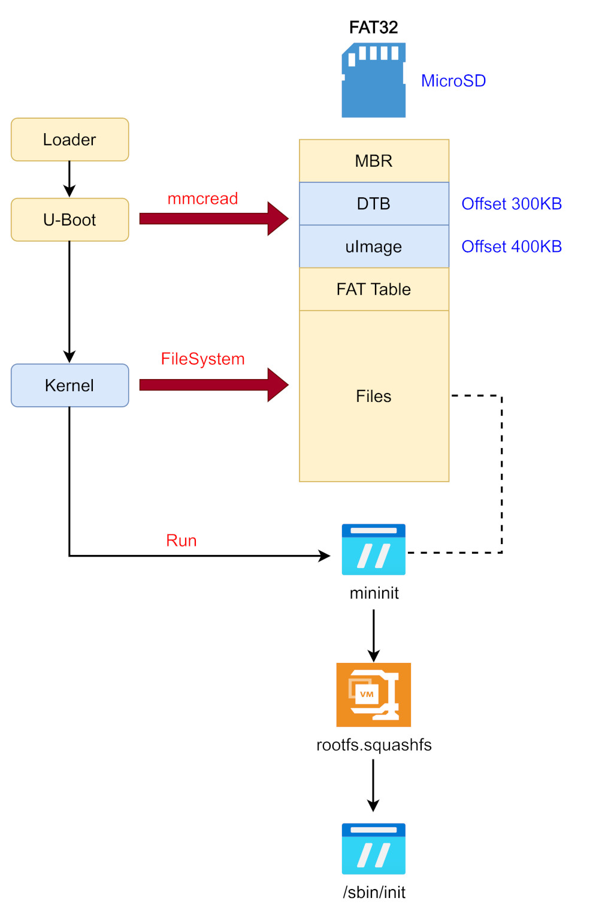
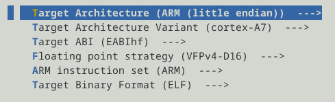
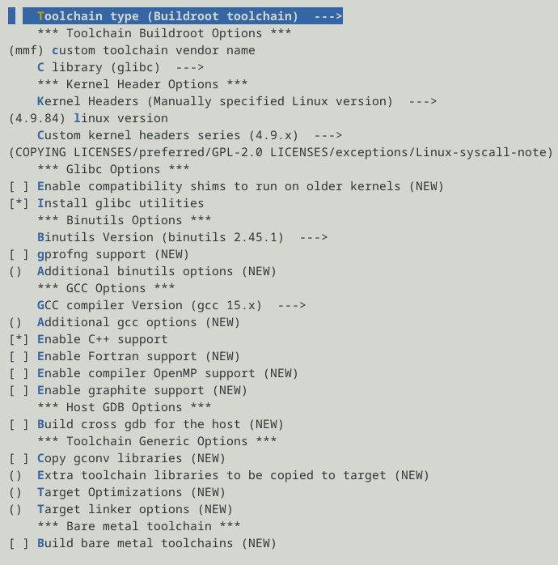
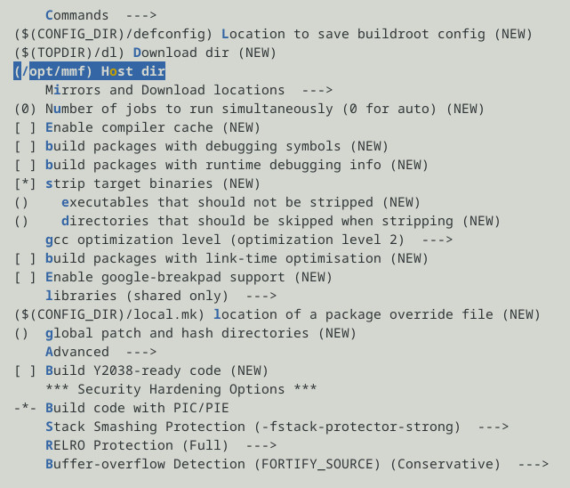
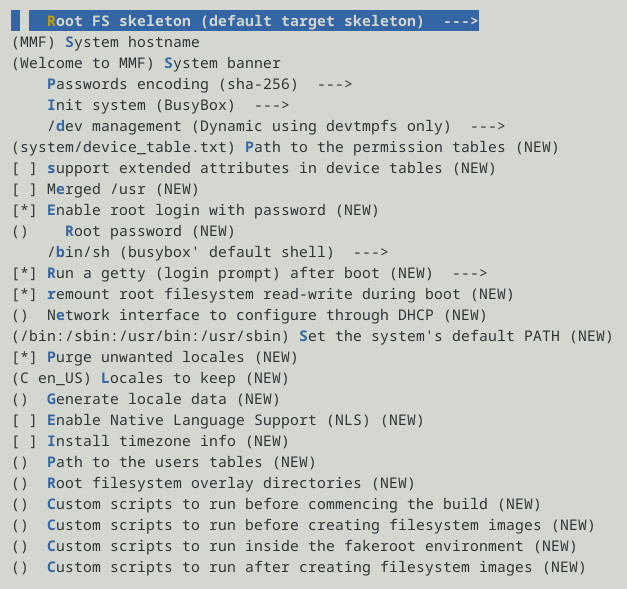
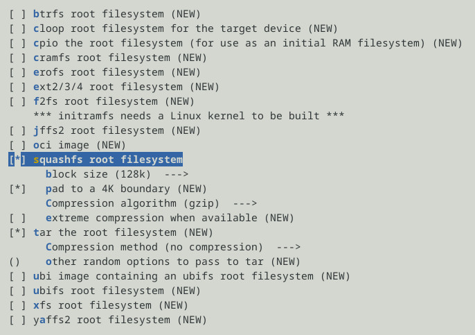
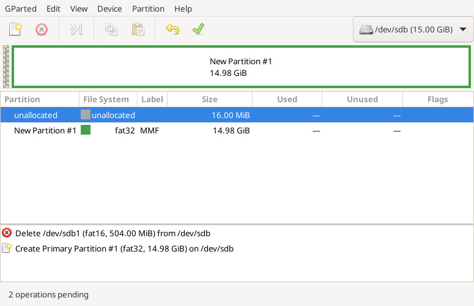
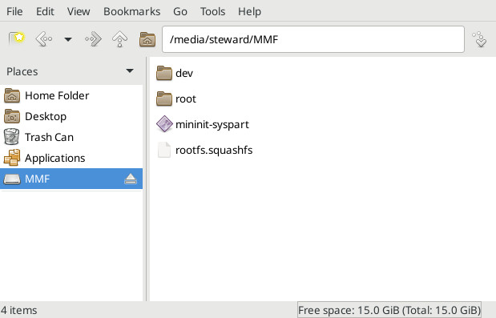

Steward
分享是一種喜悅、更是一種幸福
掌機 - Miyoo Mini Flip - 修改開機流程
司徒打算將Miyoo Mini Flip的架構設計成跟小志掌機一樣，將Kernel、DTB都放在MicroSD前16MB磁區裡面，然後統一使用mininit去掛載rootfs.squashfs並且執行/sbin/init，如下圖所示：

首先修改U-Boot啟動參數，從MicroSD磁區載入Kernel和DTB檔案，為了可以節省開機時間，司徒不打算使用XZ壓縮格式，取而代之，司徒打算使用uImage格式，U-Boot啟動參數修改方式如下：
$ cp spi_1001-79B9.bin spi_uboot_load_uimage.bin
$ python3 ./update.py spi_uboot_load_uimage.bin env.txt
Environment variables : 19
Environment size : 0x375
Environment area : 0x5f004 ~ 0x60000
CRC position : 0x5f000
CRC32 : 0xc98bf04e
update.py
import sys
import struct
FILE = sys.argv[1]
ENV_FILE = sys.argv[2]
CRC_POS = 0x5f000
CRC_START = 0x5f004
CRC_END = 0x60000
def crc32b(data):
crc = 0xffffffff
for byte in data:
crc ^= byte
for _ in range(8):
mask = -(crc & 1)
crc = (crc >> 1) ^ (0xedb88320 & mask)
return (~crc) & 0xffffffff
with open(ENV_FILE, "r", encoding="utf-8") as f:
lines = []
for line in f:
line = line.rstrip("\r\n")
if not line:
continue
lines.append(line.encode("utf-8"))
env_data = b"\0".join(lines) + b"\0\0"
env_size = CRC_END - CRC_START
if len(env_data) > env_size:
print(
f"ERROR: environment too large: "
f"0x{len(env_data):x} bytes, "
f"maximum 0x{env_size:x} bytes"
)
sys.exit(1)
with open(FILE, "r+b") as f:
f.seek(CRC_START)
f.write(b"\xff" * env_size)
f.seek(CRC_START)
f.write(env_data)
f.seek(CRC_START)
data = f.read(env_size)
if len(data) != env_size:
raise RuntimeError("Failed to read CRC area")
crc = crc32b(data)
f.seek(CRC_POS)
f.write(struct.pack("<I", crc))
print(f"Environment variables : {len(lines)}")
print(f"Environment size : 0x{len(env_data):x}")
print(f"Environment area : 0x{CRC_START:05x} ~ 0x{CRC_END:05x}")
print(f"CRC position : 0x{CRC_POS:05x}")
print(f"CRC32 : 0x{crc:08x}")
env.txt
SdUpgradeImage= baudrate=115200 bootargs= bootcmd=gpio output 73 1;sleepms 50;gpio output 73 0;sleepms 150;gpio output 73 1;sleepms 200;gpio output 85 1;bootlogo 0 0 0 0 0;mw 1f001cc0 11;gpio out 8 0;mmc dev 0;mmc read 0x22000000 0x320 0x4000;mmc read 0x23000000 0x258 0x80;bootm 0x22000000 - 0x23000000 bootdelay=0 cpu_part_start=14270000 dispout=LCD752560 ethact=sstar_emac ethaddr=00:30:1b:ba:02:db filesize=1e4f0 miyoo_version=202510011046 sf_kernel_size=200000 sf_kernel_start=60000 sf_part_size=20000 sf_part_start=270000 stderr=serial stdin=serial stdout=serial usb_folder=images
司徒建立一個暫時Repo (https://github.com/steward-fu/mmf)，最後將會Archive到https://github.com/steward-fu/website/releases/tag/miyoo-mini-flip，編譯Kernel、mininit步驟如下：
$ cd
$ wget https://github.com/steward-fu/website/releases/download/miyoo-mini-flip/ssd202d_toolchain.tar.gz
$ tar xvf ssd202d_toolchain.tar.gz
$ sudo mv ssd202d /opt
$ git clone https://github.com/steward-fu/mmf
$ cd kernel
$ vim scripts/dtc/dtc-lexer.lex.c +640
extern YYLTYPE yylloc;
$ vim arch/arm/boot/dts/mmf.dts
bootargs = "console=ttyS0,115200 console=tty ignore_loglevel loglevel=8 root=/dev/mmcblk0p1 rootwait rootfstype=vfat rw init=/mininit-syspart LX_MEM=0x7f00000 mma_heap=mma_heap_name0,miu=0,sz=0x1500000 mma_memblock_remove=1 highres=off mmap_reserved=fb,miu=0,sz=0x300000,max_start_off=0x7C00000,max_end_off=0x7F00000";
$ export PATH=/opt/ssd202d/bin:$PATH
$ ARCH=arm CROSS_COMPILE=arm-linux-gnueabihf- make distclean
$ ARCH=arm CROSS_COMPILE=arm-linux-gnueabihf- make mmf_defconfig
$ ARCH=arm CROSS_COMPILE=arm-linux-gnueabihf- LOADADDR=0x22000000 make uImage modules -j4
$ sudo dd if=arch/arm/boot/uImage of=/dev/sdX bs=1024 seek=400
$ sudo dd if=arch/arm/boot/dts/mmf.dtb of=/dev/sdX bs=1024 seek=300
$ cd ../mininit
$ make
$ file mininit-syspart
mininit-syspart: ELF 32-bit LSB executable, ARM, EABI5 version 1 (SYSV), statically linked, for GNU/Linux 3.2.0, stripped
編譯buildroot
$ cd $ wget https://buildroot.org/downloads/buildroot-2026.08.tar.gz $ tar xvf buildroot-2026.08.tar.gz $ cd buildroot-2026.08 $ make menuconfig
ARM cortex-A7

glibc、C++

/opt/mmf

Welcome to MMF

squashfs

編譯
$ make
$ mkdir output/target/boot
$ make
$ file output/images/rootfs.squashfs
output/images/rootfs.squashfs: Squashfs filesystem, little endian, version 4.0, zlib compressed, 2901998 bytes, 388 inodes, blocksize: 131072 bytes, created: Sun Sep 27 13:11:47 2026
MicroSD格式(如果重新格式化，記得重新複製uImage、DTB)

MicroSD資料

重新燒錄SPI Image(spi_uboot_load_uimage.bin)後，在將MicroSD插入開機，就可以從UART看到如下Log:
mininit: mininit 2.0.2 mininit: free loop device: 0 mininit: setting up loop: 'rootfs.squashfs' via '/dev/loop0' mininit: mounting 'rootfs.squashfs' on '/root' mininit: rootfs.squashfs mounted on /root mininit: moving '/dev' mount mininit: root switch done mininit: init: /sbin/init mininit: starting /sbin/init mount: mounting /dev/loop0 on / failed: Permission denied seedrng: can't create directory '/var/lib/seedrng': Read-only file system Starting syslogd: OK Starting klogd: OK Running sysctl: OK Starting network: OK Starting crond: OK Welcome to MMF MMF login: root #
P.S. 如果想測試，使用這個commit 843b5601